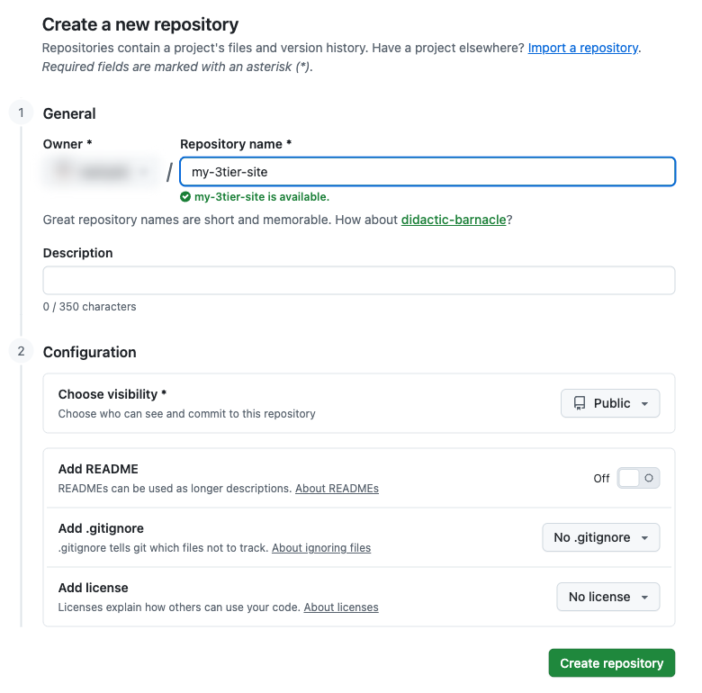
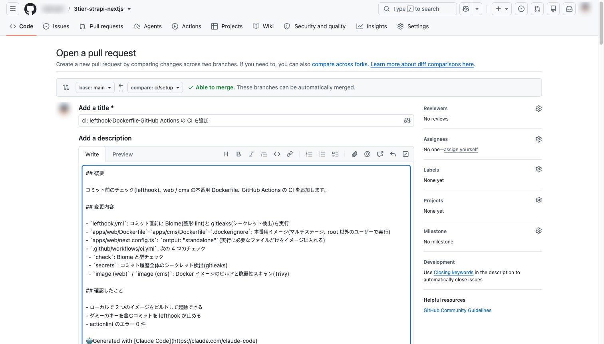
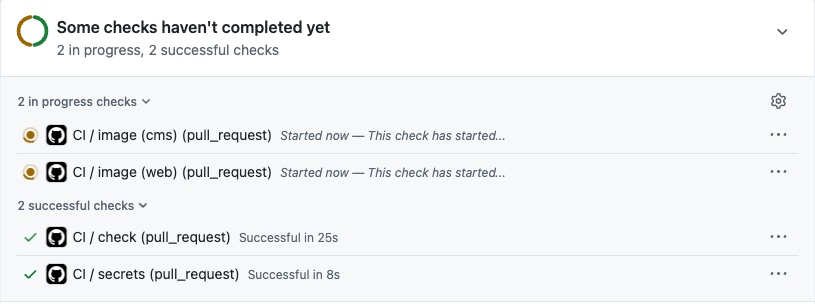
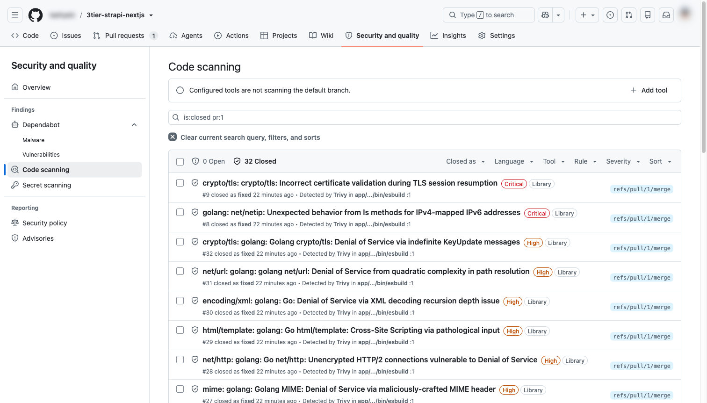

GitHub와 CI: 검사를 통과한 코드만 main에 들어가게 하기
지금까지 만든 코드를 GitHub에 올리고, 변경할 때마다 기계가 자동으로 검사(CI)하게 만듭니다. 그리고 검사를 통과하지 못한 코드는 main에 합칠 수 없도록 저장소를 설정합니다. 06장의 자동 배포는 이 main을 기준으로 움직입니다.
PR을 만들면 CI 4개(코드 검사·시크릿 검사·이미지 빌드와 취약점 검사 ×2)가 자동으로 돌고, 모두 ✓일 때만 main에 squash로 머지할 수 있는 상태를 만든다.
0. 이 장에서 만드는 것
문제가 있는 코드가 main에 들어가지 못하도록 세 겹으로 막습니다. 앞쪽일수록 빠르게 알려 주고, 뒤쪽일수록 건너뛸 수 없습니다.
| 단계 | 하는 일 | 끝나면 |
|---|---|---|
| 1 | GitHub 저장소 만들기와 첫 push | 01~04장의 커밋이 GitHub에 있음 |
| 2 | 작업 브랜치 만들기 | main이 아닌 곳에서 작업 |
| 3 | 커밋 전 검사(lefthook) | 시크릿이 든 커밋이 막힘 |
| 4 | 운영용 Docker 이미지(Dockerfile) | web·cms 이미지가 빌드됨 |
| 5 | CI 워크플로 | ci.yml 완성 |
| 6 | push와 PR | CI가 자동으로 돎 |
| 7 | CI 결과 읽기와 대응 | 4개 모두 ✓ |
| 8 | 저장소 설정(머지 방식·Ruleset) | CI 통과 전에는 머지 불가 |
| 9 | 머지 | 05장 완료 |
1. GitHub 저장소 만들기와 첫 push
GitHub에서 오른쪽 위 ＋ → New repository를 엽니다.

| 항목 | 값 | 이유 |
|---|---|---|
| Repository name | 자유(예: my-3tier-site) | |
| Visibility | Public 권장 | 이 장의 Ruleset·Secret scanning·Code scanning이 무료 플랜에서 모두 동작합니다. Private에서 쓸 수 있는 범위는 10절 표를 보세요 |
| README / .gitignore / license | 추가하지 않음 | 위 캡션 참고 |
만든 뒤 표시되는 주소로 PC의 저장소를 연결하고 올립니다.
실행 위치: 저장소 루트
git remote add origin https://github.com/<YOUR_ACCOUNT>/<YOUR_REPO>.git
git push -u origin mainGitHub의 저장소 화면에 01~04장의 커밋과 파일이 보입니다.
2. 작업 브랜치 만들기
앞으로의 변경은 브랜치에서 하고, PR(Pull Request)로 main에 합칩니다. 브랜치는 "main을 복사한 작업용 사본", PR은 "이 사본의 변경을 main에 합쳐 달라는 신청서"입니다. 신청서가 올라오면 CI가 자동으로 검사하고, 통과해야 합칠 수 있습니다.
실행 위치: 저장소 루트
git switch -c ci/setup3. 커밋 전 검사 (lefthook)
git에는 특정 순간에 자동으로 스크립트를 실행하는 hook이 있습니다. git commit 직전에 실행되는 것이 pre-commit hook이고, 스크립트가 실패하면 커밋이 만들어지지 않습니다. 다만 hook 파일은 .git/ 안에 있어서 팀원에게 공유되지 않습니다. lefthook은 규칙을 저장소의 lefthook.yml에 적어 두고, pnpm install을 할 때 각자의 PC에 hook을 자동으로 설치해 줍니다.
3-1. 설치
lefthook은 설치될 때 스크립트(hook 등록)를 실행해야 합니다. 01장에서 pnpm은 "허락한 패키지만 설치 스크립트를 실행"하도록 했으므로, pnpm-workspace.yaml의 allowBuilds에 먼저 허락을 추가합니다.
pnpm-workspace.yaml (allowBuilds 부분)
# 아래 패키지는 스크립트를 실행하지 않아도 동작하므로 false(실행 안 함)로 둡니다.
# lefthook 만 true: 설치할 때 git hook 을 등록하는 스크립트가 필요합니다 (05장).
allowBuilds:
"@swc/core": false
core-js-pure: false
esbuild: false
lefthook: true실행 위치: 저장소 루트
pnpm add -D -w lefthook-w는 "저장소 루트(작업공간 전체)에 추가"라는 뜻입니다. 설치가 끝나면 hook이 등록되고, 예시가 적힌 lefthook.yml이 생깁니다. 내용을 아래로 바꿉니다.
3-2. 검사 규칙
lefthook.yml
# git commit 직전에 자동으로 실행되는 검사 (lefthook)
# 문제가 있으면 커밋이 만들어지지 않는다. 같은 검사를 GitHub Actions(CI)에서도 한 번 더 한다.
pre-commit:
parallel: true
jobs:
# 코드 모양 자동 수정 + 실수 검출. 고친 파일은 자동으로 다시 스테이징한다
- name: biome
glob: "*.{js,ts,cjs,mjs,jsx,tsx,json,jsonc,css}"
run: pnpm exec biome check --write --no-errors-on-unmatched --files-ignore-unknown=true {staged_files}
stage_fixed: true
# 비밀번호·토큰 같은 시크릿이 커밋에 들어가지 않았는지 검사 (Docker 로 실행하므로 따로 설치할 필요 없음)
- name: gitleaks
run: docker run --rm -v "$PWD:/repo" ghcr.io/gitleaks/gitleaks:v8.30.1 git --pre-commit --staged --redact --verbose /repo| 항목 | 의미 / 왜 |
|---|---|
parallel: true | 두 검사를 동시에 실행해 기다리는 시간을 줄입니다 |
glob | 이 확장자의 파일을 커밋할 때만 Biome을 실행합니다 |
{staged_files} | "이번에 커밋할 파일 목록"으로 바뀝니다. 전체가 아니라 바뀐 파일만 검사해서 빠릅니다 |
--write + stage_fixed: true | 코드 모양은 자동으로 고치고, 고친 내용을 다시 커밋 대상에 넣습니다. stage_fixed가 없으면 "고치기 전" 내용이 커밋됩니다 |
gitleaks --pre-commit --staged | 아직 커밋되지 않은 변경만 검사합니다. 시크릿이 커밋 자체가 되지 않아 히스토리에 남지 않습니다 |
--redact | 찾은 값을 화면에 REDACTED로 가립니다 |
| Docker로 gitleaks 실행 | Docker는 01장에서 설치했으므로 Mac·Windows 모두 따로 설치할 것이 없습니다. CI와 같은 버전을 씁니다 |
3-3. 동작 확인
시크릿처럼 보이는 문자열을 일부러 커밋해 봅니다(가짜 값입니다).
실행 위치: 저장소 루트
echo 'const key = "AKIAZ7XQ4JH2K9LMN3PQ";' > leak-test.ts # gitleaks:allow
git add leak-test.ts
git commit -m "test"
# 확인했으면 되돌리기
git rm --cached leak-test.ts && rm leak-test.tsgitleaks가 leaks found: 1을 출력하고 🥊 표시와 함께 커밋이 만들어지지 않습니다. 값은 REDACTED로 가려집니다.
첫 줄 끝의 # gitleaks:allow는 "이 줄은 검사 예외"라는 표시입니다. 이 문서처럼 설명용 가짜 값을 커밋해야 할 때만 씁니다. 셸 주석이라 leak-test.ts에는 기록되지 않으므로, 위 테스트는 그대로 막힙니다.
hook만으로 충분하지 않은 이유
git commit --no-verify로 건너뛸 수 있고, pnpm install을 하지 않은 사람이나 GitHub 웹 화면에서 직접 고친 경우에는 동작하지 않습니다. 그래서 같은 검사를 5절의 CI에서 한 번 더 합니다. hook은 빠른 알림, CI는 강제라는 역할 분담입니다.
이미 push된 시크릿은 파일에서 지워도 히스토리에 남습니다. 그런 경우에는 그 키를 폐기하고 새로 발급하는 것이 원칙입니다.
4. 운영용 Docker 이미지 (Dockerfile)
이미지는 "앱 + 실행에 필요한 모든 것(OS 일부, Node, 패키지)"을 묶은 상자입니다. 06장에서는 이 이미지를 AWS(ECS)에서 실행합니다. 이 장에서는 CI가 PR마다 이미지를 빌드하고 검사하게 만듭니다. Dockerfile은 이 상자를 만드는 레시피입니다.
4-1. Next.js를 작은 이미지용으로 설정
apps/web/next.config.ts
import type { NextConfig } from "next";
const nextConfig: NextConfig = {
// 실행에 필요한 파일만 .next/standalone 에 모은다 (Docker 이미지를 작게)
output: "standalone",
};
export default nextConfig;next build가 실행에 실제로 필요한 파일만 골라 .next/standalone에 모읍니다. node_modules 전체를 넣지 않아도 됩니다.
4-2. 이미지에 넣지 않을 파일
.dockerignore (저장소 루트)
# Docker 빌드에 보내지 않을 파일
# PC 에서 만든 설치·빌드 결과가 섞이지 않게, 시크릿(.env)과 로컬 업로드 파일이 이미지에 들어가지 않게 한다
**/node_modules
**/.next
**/dist
**/.strapi
**/.env
**/.env.*
!**/.env.example
apps/cms/public/uploads/*
.gitPC에서 설치한 node_modules(Mac용 파일)가 섞이거나 .env의 시크릿이 이미지에 들어가는 것을 막습니다.
4-3. Dockerfile
두 Dockerfile 모두 멀티 스테이지입니다. 1단계(build)에서 설치·빌드하고, 2단계(runtime)에는 실행에 필요한 결과물만 옮깁니다. 1단계의 빌드 도구와 소스는 이미지에 들어가지 않습니다.
apps/web/Dockerfile
# Next.js(web) 운영 이미지
# 빌드 컨텍스트는 저장소 루트 (lockfile 이 루트에 있으므로):
# docker build -f apps/web/Dockerfile -t web .
FROM node:24-alpine AS base
WORKDIR /repo
# ---- 1단계: 빌드 ----
FROM base AS build
# package.json 의 packageManager 에 적힌 pnpm 버전을 설치 (버전은 한 곳에서만 관리)
COPY package.json pnpm-lock.yaml pnpm-workspace.yaml ./
RUN npm install -g "$(node -p "require('./package.json').packageManager")"
# 의존성 설치: 소스보다 먼저 package.json 만 복사해서, 소스만 바뀌면 이 단계는 캐시를 쓴다
COPY apps/web/package.json apps/web/
RUN pnpm install --frozen-lockfile --filter web
COPY apps/web apps/web
RUN pnpm -F web build
# ---- 2단계: 실행 (빌드 도구·소스 없이, 실행에 필요한 파일만) ----
FROM base AS runtime
ENV NODE_ENV=production PORT=3000 HOSTNAME=0.0.0.0
# 실행에는 npm 이 필요 없다. 베이스 이미지에 들어 있는 npm·corepack 을 지워 취약점과 공격 도구를 줄인다
RUN rm -rf /usr/local/lib/node_modules/npm /usr/local/lib/node_modules/corepack \
/usr/local/bin/npm /usr/local/bin/npx /usr/local/bin/corepack
COPY --from=build --chown=node:node /repo/apps/web/.next/standalone ./
COPY --from=build --chown=node:node /repo/apps/web/.next/static ./apps/web/.next/static
COPY --from=build --chown=node:node /repo/apps/web/public ./apps/web/public
# root 가 아닌 사용자로 실행 (컨테이너가 뚫려도 피해를 줄인다)
USER node
EXPOSE 3000
CMD ["node", "apps/web/server.js"]apps/cms/Dockerfile
# Strapi(cms) 운영 이미지
# 빌드 컨텍스트는 저장소 루트 (lockfile 이 루트에 있으므로):
# docker build -f apps/cms/Dockerfile -t cms .
FROM node:24-alpine AS base
WORKDIR /repo
# ---- 1단계: 빌드 ----
FROM base AS build
# package.json 의 packageManager 에 적힌 pnpm 버전을 설치 (버전은 한 곳에서만 관리)
COPY package.json pnpm-lock.yaml pnpm-workspace.yaml ./
RUN npm install -g "$(node -p "require('./package.json').packageManager")"
# 의존성 설치: 소스보다 먼저 package.json 만 복사해서, 소스만 바뀌면 이 단계는 캐시를 쓴다
COPY apps/cms/package.json apps/cms/
RUN pnpm install --frozen-lockfile --filter cms
COPY apps/cms apps/cms
# 관리자 화면(React)을 빌드하고 TypeScript 를 dist/ 로 변환
ENV NODE_ENV=production
RUN pnpm -F cms build
# 실행에 필요한 것만 /out 에 모은다 (devDependencies 제외)
RUN pnpm --filter cms deploy --prod /out && cp -R apps/cms/dist /out/dist
# 관리자 화면 빌드 도구 vite 와, vite 전용으로 딸려 온 옛 esbuild(0.21.5)는 위의 build 에서만 쓴다.
# Strapi 가 dependencies 로 선언해서 /out 에 딸려 오므로, 운영 이미지로 옮기기 전에 뺀다 (취약점·공격 대상 축소).
# 주의: esbuild 는 두 벌 있다. 새 버전(0.28.x)은 start 에서 쓰이지는 않지만, strapi 명령 프로그램이 켜질 때
# build 명령의 코드까지 한꺼번에 불러오면서 함께 불러오므로 없으면 기동에 실패한다 → 남긴다.
RUN rm -rf /out/node_modules/.pnpm/vite@* /out/node_modules/.pnpm/esbuild@0.21.5 /out/node_modules/.pnpm/@esbuild+*@0.21.5
# ---- 2단계: 실행 ----
FROM base AS runtime
WORKDIR /app
ENV NODE_ENV=production HOST=0.0.0.0 PORT=1337
# 실행에는 npm 이 필요 없다. 베이스 이미지에 들어 있는 npm·corepack 을 지워 취약점과 공격 도구를 줄인다
RUN rm -rf /usr/local/lib/node_modules/npm /usr/local/lib/node_modules/corepack \
/usr/local/bin/npm /usr/local/bin/npx /usr/local/bin/corepack
COPY --from=build --chown=node:node /out ./
# Strapi 는 시작할 때 업로드 폴더가 있는지 확인한다 (.gitkeep 은 이미지에 들어가지 않으므로 만든다)
RUN mkdir -p public/uploads && chown node:node public/uploads
# root 가 아닌 사용자로 실행 (컨테이너가 뚫려도 피해를 줄인다)
USER node
EXPOSE 1337
CMD ["node_modules/.bin/strapi", "start"]| 기법 | 위치 | 왜 |
|---|---|---|
| 빌드 범위 = 저장소 루트 | docker build -f apps/…/Dockerfile . | lockfile(pnpm-lock.yaml)이 루트에 있기 때문(모노레포) |
pnpm 버전을 package.json에서 읽음 | npm install -g "$(node -p …)" | 버전을 한 곳(packageManager)에서만 관리 |
package.json을 먼저 복사하고 install | 1단계 | Docker는 각 줄의 결과를 저장해 두고, 입력이 바뀐 줄부터 다시 실행합니다. 소스만 바꾸면 설치 단계를 건너뛰어 빨라집니다 |
| npm·corepack 삭제 | 2단계 | 실행(node server.js, strapi start)에는 npm이 필요 없습니다. 필요 없는 도구는 취약점과 공격 수단만 늘립니다(7절) |
| vite와 옛 esbuild 제외 | cms 1단계 끝 | 관리자 화면을 빌드할 때만 쓰는 도구입니다. 2단계로 옮기기 전에 뺍니다(7절) |
USER node | 2단계 | root가 아닌 사용자로 실행해, 컨테이너가 뚫려도 피해를 줄입니다 |
HOSTNAME=0.0.0.0 / HOST=0.0.0.0 | 2단계 | 컨테이너 밖(06장의 로드 밸런서)에서 오는 접속을 받기 위해 |
STRAPI_API_TOKEN, APP_KEYS 등)은 이미지에 넣지 않습니다. 실행할 때 환경변수로 넣습니다(06장에서는 Secrets Manager → ECS).4-4. PC에서 빌드해 보기
실행 위치: 저장소 루트 (Strapi가 떠 있는 상태)
docker build -f apps/web/Dockerfile -t web:local .
docker build -f apps/cms/Dockerfile -t cms:local .
# web 을 실행해 로컬 Strapi 에 연결 (컨테이너 안에서 PC 를 가리키는 주소는 host.docker.internal)
docker run --rm -p 3100:3000 --env-file apps/web/.env.local \
-e STRAPI_URL=http://host.docker.internal:1337 web:localhttp://localhost:3100에서 04장과 같은 메뉴 페이지가 열립니다. 확인했으면 Ctrl + C로 멈춥니다.
5. CI 워크플로 (GitHub Actions)
GitHub Actions는 저장소의 .github/workflows/에 있는 YAML 파일을 읽고, 정해진 순간(PR 등)에 GitHub이 준비한 가상 머신(러너)에서 명령을 실행합니다. 러너는 job마다 새로 만들어지고 끝나면 버려지는 깨끗한 환경이라서, "내 PC에서는 되는데" 같은 차이가 드러납니다.
.github/workflows/ci.yml
# PR 을 만들거나 main 에 머지될 때 자동으로 실행되는 검사 (CI)
# 액션은 태그(v1 등)가 아니라 커밋 SHA 로 고정한다. 태그는 나중에 다른 코드로 바뀔 수 있기 때문 (2026년 Trivy 사건).
name: CI
on:
pull_request:
push:
branches: [main]
# 같은 브랜치에 새 커밋이 올라오면 이전 실행은 취소
concurrency:
group: ci-${{ github.ref }}
cancel-in-progress: true
# 기본 권한은 "읽기"만. 더 필요한 job 에서만 추가한다 (최소 권한)
permissions:
contents: read
jobs:
# 코드 모양·실수(Biome)와 타입 검사
check:
# 러너 OS 는 버전을 고정한다 (ubuntu-latest 는 2026-10-19 부터 Ubuntu 26 으로 바뀜. 올릴 때는 사람이 정한다)
runs-on: ubuntu-24.04
timeout-minutes: 10
steps:
- uses: actions/checkout@3d3c42e5aac5ba805825da76410c181273ba90b1 # v7.0.1
with:
persist-credentials: false
# package.json 의 pnpm 버전, .nvmrc 의 Node 버전을 읽어 설치하고 pnpm install 까지 한다
- uses: pnpm/setup@fbda4c85fc2e1e08721cd8763afea8f48d60f024 # v3.0.0
with:
cache: true
require-lockfile: true
- run: pnpm exec biome ci
- run: pnpm typecheck
# 시크릿(비밀번호·토큰)이 커밋 히스토리에 들어가지 않았는지
secrets:
runs-on: ubuntu-24.04
timeout-minutes: 10
steps:
- uses: actions/checkout@3d3c42e5aac5ba805825da76410c181273ba90b1 # v7.0.1
with:
fetch-depth: 0 # 전체 히스토리를 검사하기 위해
persist-credentials: false
- run: docker run --rm -v "$PWD:/repo" ghcr.io/gitleaks/gitleaks:v8.30.1 git --redact --verbose /repo
# 운영과 같은 Docker 이미지를 빌드하고, 이미지 안의 알려진 취약점을 검사
image:
runs-on: ubuntu-24.04
timeout-minutes: 20
permissions:
contents: read
security-events: write # 검사 결과를 Security 탭에 올리기 위해
strategy:
fail-fast: false
matrix:
app: [web, cms]
steps:
- uses: actions/checkout@3d3c42e5aac5ba805825da76410c181273ba90b1 # v7.0.1
with:
persist-credentials: false
- uses: docker/setup-buildx-action@f87e5991a6d7451dcb8d9637bfbc97413f497069 # v4.4.1
# 이 액션은 기본으로 Summary 에 "Docker Build summary"(캐시 적중률 등)를 붙이고, 빌드 기록 파일을 Artifacts 에 올린다
- uses: docker/build-push-action@c3c9e263c25d99ce0380d002d59b67737d91b0dc # v7.4.0
with:
context: .
file: apps/${{ matrix.app }}/Dockerfile
tags: ${{ matrix.app }}:ci
load: true # 이 러너 안에서 검사할 수 있도록 (어디에도 push 하지 않음)
cache-from: type=gha,scope=${{ matrix.app }}
cache-to: type=gha,mode=max,scope=${{ matrix.app }}
# ① 결과를 SARIF 파일로 만들어 Security 탭에 올린다
# (private 저장소에서 GitHub Advanced Security 가 없으면 이 두 단계는 지워도 된다)
- uses: aquasecurity/trivy-action@ed142fd0673e97e23eac54620cfb913e5ce36c25 # v0.36.0
with:
version: v0.74.0
image-ref: ${{ matrix.app }}:ci
scanners: vuln
ignore-unfixed: true
severity: HIGH,CRITICAL
limit-severities-for-sarif: true
format: sarif
output: trivy-${{ matrix.app }}.sarif
- uses: github/codeql-action/upload-sarif@2892aa5e19bbd11bc0cff5427e3b750a04d9e3c2 # v4.38.2
if: always()
with:
sarif_file: trivy-${{ matrix.app }}.sarif
category: trivy-${{ matrix.app }}
# ② 고칠 수 있는 HIGH·CRITICAL 취약점이 있으면 실패시킨다 (이것이 머지를 막는 관문)
- uses: aquasecurity/trivy-action@ed142fd0673e97e23eac54620cfb913e5ce36c25 # v0.36.0
env:
TRIVY_TABLE_MODE: detailed # 검사한 파일 수백 개의 요약표는 빼고, 찾은 취약점 표만
with:
version: v0.74.0
image-ref: ${{ matrix.app }}:ci
scanners: vuln
ignore-unfixed: true
severity: HIGH,CRITICAL
format: table
output: trivy-${{ matrix.app }}.txt
exit-code: "1"
skip-setup-trivy: true
# ②의 결과 표를 실행 화면의 Summary 에 붙인다 (로그를 뒤지지 않고 바로 보이게. 추가 권한 불필요)
- if: always()
env:
APP: ${{ matrix.app }}
run: |
{
echo "### Trivy: ${APP} (고칠 수 있는 HIGH·CRITICAL)"
echo '```'
if [ ! -f "trivy-${APP}.txt" ]; then echo "(검사 전에 실패)"
elif grep -q 'Total: [1-9]' "trivy-${APP}.txt"; then cat "trivy-${APP}.txt"
else echo "없음"; fi
echo '```'
} >> "$GITHUB_STEP_SUMMARY"5-1. 파일의 구성
| 이름 | 뜻 | 이 파일에서 |
|---|---|---|
on | 언제 실행할지 | PR을 만들거나 PR에 push할 때, main에 머지됐을 때 |
concurrency | 같은 브랜치에서 연달아 push하면 이전 실행을 취소 | 시간 절약 |
permissions | 자동 발급되는 토큰(GITHUB_TOKEN)의 권한. 적지 않은 권한은 전부 없음(none) | 기본은 "읽기만". image job만 결과 업로드 권한 추가(최소 권한) |
| job | 러너 하나에서 도는 작업 묶음. job끼리는 동시에 실행 | check / secrets / image |
step: run | 러너에서 명령을 실행 | pnpm typecheck 등 |
step: uses + with | 다른 사람이 만들어 공개한 액션을 가져와 실행. with는 그 액션에 넘기는 설정 | 아래 표 |
runs-on: ubuntu-24.04 | 러너의 OS. 버전을 고정 | ubuntu-latest는 시기에 따라 새 버전으로 바뀝니다 |
timeout-minutes | 제한 시간 | 기본값 360분. 멈췄을 때 오래 붙잡지 않게 |
5-2. 사용하는 액션
| 액션 (만든 곳) | 해 주는 일 | 주요 with |
|---|---|---|
actions/checkout (GitHub) | 빈 러너에 저장소 코드를 받아 옴 | persist-credentials: false: 토큰을 디스크에 남기지 않음 / fetch-depth: 0: 전체 히스토리를 받음(secrets job) |
pnpm/setup (pnpm) | package.json의 pnpm 버전, .nvmrc의 Node 버전을 설치하고 pnpm install까지 | cache: 패키지 캐시 / require-lockfile: lockfile과 다르면 실패 |
docker/setup-buildx-action, docker/build-push-action (Docker) | 이미지 빌드. 빌드 캐시를 GitHub에 저장 | load: true: 러너 안에서 검사할 수 있게(어디에도 올리지 않음) / cache-*: type=gha: 캐시 |
aquasecurity/trivy-action (Trivy 개발사) | 이미지 안의 부품을 공개 취약점 DB와 대조 | ignore-unfixed: 고친 버전이 없는 것은 제외 / severity: HIGH·CRITICAL만 / exit-code: "1": 찾으면 실패 |
github/codeql-action/upload-sarif (GitHub) | 검사 결과를 GitHub의 Code scanning에 올림(7절) | category: web·cms 결과를 구분 |
왜 @v7이 아니라 긴 영숫자(커밋 SHA)로 적나요?
uses:는 다른 사람이 쓴 코드를 우리 CI 안에서, 우리 저장소의 토큰에 손이 닿는 상태로 실행하는 것입니다. @v7.0.1 같은 태그는 저장소 주인(또는 계정을 탈취한 사람)이 다른 코드로 옮길 수 있는 이름표입니다. 커밋 SHA는 코드 내용에서 계산한 값이라 내용이 바뀌면 값도 바뀝니다. 그래서 내가 확인한 코드만 실행됩니다.
실제로 2026년 3월, 취약점 검사 액션 trivy-action의 태그 대부분이 악성 코드로 바뀌어 태그로 쓰던 많은 CI에서 시크릿이 유출됐습니다. SHA로 고정한 곳은 영향이 없었습니다. 줄 끝의 # v7.0.1 주석은 사람이 버전을 알아보기 위한 것입니다. 올릴 때는 SHA와 주석을 함께 바꿉니다.
5-3. job 3개가 하는 일
| job (= 체크 이름) | 하는 일 | 막아 주는 것 |
|---|---|---|
check | biome ci(코드 모양·실수. 파일을 고치지 않고 검사만), pnpm typecheck(타입) | 필드 이름 오타 같은 실수, "내 PC에서만 되는" 코드 |
secrets | gitleaks로 모든 커밋 검사 | 과거 커밋에 섞인 시크릿(파일에서 지워도 히스토리에 남음) |
image (web) / image (cms) | 운영과 같은 이미지를 빌드(앱 빌드 포함)하고 Trivy로 검사. matrix로 같은 job을 web·cms 두 번 실행 | 깨진 Dockerfile, 이미지 안의 알려진 취약점 |
6. push와 PR
실행 위치: 저장소 루트
git add -A
git commit -m "ci: lefthook・Dockerfile・GitHub Actions の CI を追加"
git push -u origin ci/setup커밋할 때 3절의 lefthook이 동작합니다. GitHub 저장소 화면의 Pull requests → New pull request에서 base를 main, compare를 ci/setup으로 고릅니다.

Create pull request를 누르면 CI가 바로 시작됩니다.

7. CI 결과 읽기와 대응
체크 이름을 누르면 실행 화면이 열립니다. 왼쪽 Summary에서 전체 결과와, image job이 붙인 Trivy 결과 표를 볼 수 있습니다.

.dockerbuild 파일은 docker/build-push-action이 기본으로 붙이는 것입니다7-1. Trivy가 취약점을 찾았을 때 (예시)
이미지 안에는 여러분이 직접 고르지 않은 패키지가 수천 개 들어 있습니다. 새 취약점은 매일 공개되므로, 같은 코드라도 날짜에 따라 결과가 달라집니다. 이 자료를 만들 때도 처음 실행에서 web 4건, cms 32건이 나왔습니다. Summary의 표에는 패키지 이름, 취약점 번호(CVE), 고쳐진 버전(Fixed Version)이 나옵니다. 아래 순서로 판단합니다.
| 순서 | 판단 | 이 자료에서 한 일(예시) |
|---|---|---|
| ① 고칠 수 있으면 올린다 | 고쳐진 버전이 있는가 | Strapi가 버전을 고정해 둔 sharp, nodemailer를 overrides로 수정판으로 올림(아래) |
| ② 실행에 안 쓰면 뺀다 | 운영 실행에 그 패키지가 필요한가 | 베이스 이미지에 딸린 npm, 관리자 화면 빌드 전용인 vite·옛 esbuild를 운영 이미지에서 제외(4-3의 Dockerfile) |
| ③ 둘 다 안 되면 | 근거와 기한을 적고 예외로 둠 | (이번에는 필요 없었음) |
pnpm-workspace.yaml (최종)
packages:
- apps/*
- infra
# 설치할 때 패키지의 빌드 스크립트(postinstall 등)를 실행할지 정합니다.
# pnpm 은 기본적으로 모두 막고, 여기에 적히지 않은 패키지가 스크립트를 가지고 있으면 설치를 멈춥니다 (공급망 공격 방지).
# 아래 패키지는 스크립트를 실행하지 않아도 동작하므로 false(실행 안 함)로 둡니다.
# lefthook 만 true: 설치할 때 git hook 을 등록하는 스크립트가 필요합니다 (05장).
allowBuilds:
"@swc/core": false
core-js-pure: false
esbuild: false
lefthook: true
# Strapi 가 버전을 정확히 고정한 간접 의존 중, 취약점이 고쳐진 버전이 있는 것을 강제로 올립니다 (05장 Trivy 검출).
# Strapi 를 업데이트할 때는 이 블록을 지우고, CI(Trivy)가 통과하는지 다시 확인합니다.
overrides:
sharp: 0.35.4
nodemailer: 9.1.0overrides는 "의존하는 패키지가 정한 버전을 무시하고 이 버전을 써라"라는 강제 지정입니다. 프레임워크가 테스트하지 않은 조합이 되므로 패치·마이너 버전 정도로 한정하고, 올린 뒤 빌드·기동을 다시 확인합니다. 여러분의 결과가 다르면 표의 순서대로 판단해 자기 것을 만드세요.7-2. Security 탭과 Code scanning
Trivy 결과는 세 곳에서 쓰입니다. 막는 것은 두 번째 Trivy 실행(exit-code: "1"), 바로 보는 것은 Summary 표, 기록·추적은 Code scanning입니다.
Code scanning은 검사기가 아니라, 여러 검사 도구의 결과를 SARIF라는 표준 형식으로 받아 보관·관리하는 GitHub의 기능입니다. GitHub이 결과를 다시 검사하지는 않습니다. upload-sarif 단계 하나로 GitHub 쪽에서는 다음 일이 자동으로 일어납니다.
| 일어나는 일 | 설명 |
|---|---|
| 경고(alert) 목록 저장 | 결과 하나하나가 번호·심각도·위치가 붙은 경고가 됩니다(Issue와는 별개) |
| 자동으로 "fixed" 처리 | 다음 검사 결과에 같은 경고가 없으면 "고쳐짐"으로 닫힙니다. 언제 생기고 언제 고쳐졌는지 이력이 남습니다 |
| PR에 체크 자동 추가 | Code scanning results / Trivy. 이 PR이 새로 만든 경고가 있는지 main과 비교합니다. 다시 검사하지 않으므로 몇 초 만에 끝납니다 |
| 처음 1회 안내 코멘트 | "Code scanning이 설정되었다"는 봇 코멘트. 한 번만 달립니다 |
| Security 탭 표시 | 기본 목록은 main 브랜치의 열린 경고입니다. PR에서 생긴 경고는 검색창에 pr:번호를 넣으면 보입니다 |

is:closed pr:1로 검색한 화면. 첫 실행에서 찾은 경고가 대응 후 모두 "closed as fixed"가 되었습니다PR의 코드 줄에 경고가 표시되지 않는 이유
SARIF의 결과에는 "문제가 있는 위치(파일과 줄)"가 적혀 있고, GitHub은 이 위치가 PR에서 바꾼 줄이면 그 줄에 경고 상자를 띄웁니다. 소스 코드 검사기(예: GitHub의 CodeQL)라면 위치가 저장소 안의 파일입니다. 하지만 이미지 검사의 위치는 app/node_modules/…처럼 이미지 안의 경로라서 저장소에 해당하는 줄이 없습니다. 그래서 체크에 "No new alerts in code changed by this pull request"가 나옵니다. 이미지 검사 결과를 Summary에도 붙인 이유입니다.
ci.yml의 ①(SARIF 생성)과 upload-sarif 두 단계를 지웁니다. 막는 기능(②)과 Summary는 그대로 동작합니다.8. 저장소 설정 (머지 방식·Ruleset)
여기까지로는 CI가 ✗여도 Merge 버튼을 누를 수 있습니다. 저장소 설정으로 "통과해야만 합칠 수 있게" 만듭니다.
8-1. 머지 방식: squash만
Settings → General → Pull Requests

| 항목 | 설정 | 왜 |
|---|---|---|
| Allow merge commits | 해제 | 머지 전용 커밋이 섞이면 히스토리가 갈라집니다 |
| Allow squash merging | 체크 | PR 안의 커밋 여러 개("수정", "오타" 등)를 main에 커밋 1개로 합쳐 넣습니다 |
| └ Default commit message | Pull request title and description | PR 제목과 설명이 그대로 main의 커밋 메시지가 됩니다 |
| Allow rebase merging | 해제 | 방식을 하나로 통일합니다 |
| Automatically delete head branches | 체크 | 머지가 끝난 브랜치를 자동으로 지웁니다 |
8-2. Ruleset: main 보호
Settings → Rules → Rulesets → New ruleset → New branch ruleset. CI가 한 번 돈 뒤에 만들어야 필수 체크 후보가 나타납니다.
| 항목 | 설정 | 왜 |
|---|---|---|
| Ruleset Name | 자유(예: main) | |
| Enforcement status | Active | Disabled면 적용되지 않습니다 |
| Bypass list | 비워 둠 | 여기 넣은 사람은 규칙을 건너뛸 수 있습니다. 비워 두면 관리자도 예외 없이 PR을 거칩니다 |
| Target branches | Add target → Include default branch | main에 적용 |
| Restrict deletions / Block force pushes | 체크(기본값) | main 삭제와 히스토리 덮어쓰기 금지 |
| Require a pull request before merging | 체크 | main에 직접 push 금지 |
| └ Required approvals | 0 | 혼자 쓰는 저장소는 승인해 줄 사람이 없습니다. 팀이면 1 이상 |
| └ Allowed merge methods | Squash | 8-1과 같은 이유 |
| Require status checks to pass | 체크 | CI가 ✓가 아니면 머지 불가. 이 장에서 가장 중요한 설정 |
| └ Add checks | check, secrets, image (web), image (cms) | 검색창에 이름을 입력하면 후보가 나옵니다. 출처가 GitHub Actions인 것을 고르면, 다른 도구가 같은 이름으로 "성공"을 보내 위장하는 것을 막습니다 |
| └ Require branches to be up to date | 해제 | 켜면 main이 바뀔 때마다 PR 브랜치를 갱신해야 합니다 |

8-3. Secret scanning과 Push protection
Settings → Advanced Security에서 확인만 합니다. public 저장소에서는 두 기능이 기본으로 켜져 있습니다. GitHub이 여러 서비스의 토큰 형식을 알고 있어서, 그런 값이 든 push를 거부하고(Push protection), 이미 올라간 것은 알려 줍니다(Secret scanning). 0절 그림의 ②입니다.
9. 머지
PR 화면으로 돌아가면, Ruleset에 넣은 4개에 Required가 붙어 있습니다.

Squash and merge → Confirm을 누릅니다. PC에서도 main을 최신으로 맞춥니다.
실행 위치: 저장소 루트
git switch main
git pull
git log --oneline -1ci: lefthook・Dockerfile・GitHub Actions の CI を追加 (#1)처럼 PR 제목에 번호가 붙은 커밋 1개가 main에 생깁니다. PR 안에서 커밋을 여러 번 했어도 하나로 합쳐집니다. main에 머지되면 CI가 main 기준으로 한 번 더 돌고, Security 탭의 목록은 이 결과로 만들어집니다.
3tier-strapi-nextjs/
├── .github/workflows/ci.yml CI
├── .dockerignore
├── lefthook.yml 커밋 전 검사
├── package.json (lefthook 추가)
├── pnpm-lock.yaml
├── pnpm-workspace.yaml (allowBuilds, overrides)
└── apps/
├── cms/
│ └── Dockerfile
└── web/
├── Dockerfile
└── next.config.ts (standalone)앞으로의 작업은 모두 같은 흐름입니다: 브랜치 → 커밋(lefthook) → push → PR(CI) → squash 머지.
10. 회사 저장소·private으로 옮길 때
플랜 조건은 바뀔 수 있습니다(2026-09 기준). 옮기기 전에 GitHub 공식 문서에서 확인하세요.
| 기능 | public | private | 없을 때 |
|---|---|---|---|
| GitHub Actions(CI) | 무료·무제한 | 플랜별 월 무료 시간 안에서 | — |
| Ruleset(필수 체크) | 무료 | Pro·Team 이상 | 사람이 CI ✓ 확인 후 머지 |
| Code scanning(SARIF 업로드) | 무료 | GitHub Code Security | ci.yml에서 두 단계 삭제 |
| Secret scanning·Push protection | 기본으로 켜짐 | GitHub Secret Protection | lefthook·CI의 gitleaks로 대체 |
저장소를 히스토리째 옮겨도 설정(머지 방식, Ruleset)은 따라가지 않습니다. 이 장의 8절을 새 저장소에서 다시 합니다. 워크플로 파일에는 저장소 이름이 적혀 있지 않으므로 그대로 동작합니다.
더 해보기
- CodeQL(Settings → Advanced Security → Code scanning → Default setup): GitHub이 소스 코드를 읽어 보안 버그를 찾습니다. 결과는 7-2의 Code scanning에 함께 쌓이고, 이번에는 PR의 해당 줄에 경고가 표시됩니다.
- SHA로 고정한 액션 올리기: 각 액션의 릴리스 페이지에서 새 버전의 커밋 SHA를 확인하고, SHA와 주석을 함께 바꾸는 PR을 만듭니다.